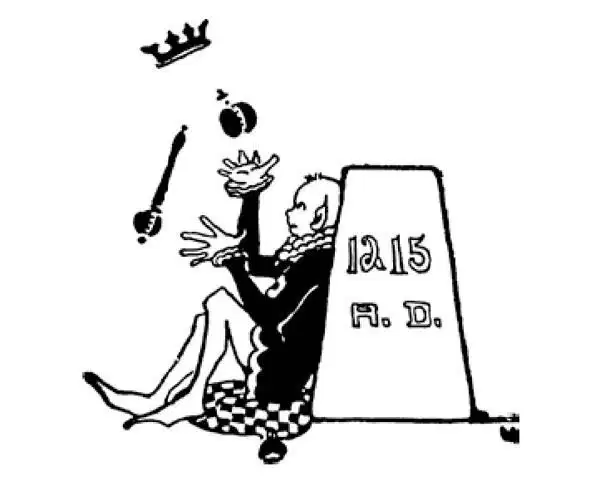

57
John, Whom Nobody Loved
没人喜欢的约翰

RICHARD the Lion-Hearted, whom everybody loved, had a brother named John, whom nobody loved.
This brother John became king, but he turned out to be a very wicked king.
He is another one of the villains in history, whom we do not like, but like to hear about, and like to clap when he gets what he deserves.
John was afraid that his young nephew named Arthur might be made king in his place, so he had him murdered. Some say he hired others to do the killing; some say he murdered him with his own hands. This was a very bad beginning for his reign, but things got worse and worse as time went on.
John got into a quarrel with the pope in Rome. The pope at that time said what should be done and what should not be done in churches everywhere. The pope ordered John to make a certain man bishop in England, and John said he wouldn't do it. He wanted another man, a friend of his, to be bishop. The pope then said he would close up all the churches in England if John didn't do as he was told. John said he didn't care. Let the pope go ahead and close up all the churches if he wanted to. So the pope ordered all churches in England to be closed until John should give in. Nowadays this might not have made much difference, but then, as I have told you, the church was the one most important thing in everyone's life; in fact, nothing else mattered so much. The closing of the churches meant that no services could be held in any church. It meant that children could not be baptized, and so, if they died, it was believed they could not go to heaven. It meant that couples could not be married. It meant that the dead could not be given a Christian burial.
The people of England were shocked. It was as if heaven had put a curse on them. They were afraid that terrible things would happen to them. Of course the people blamed John, for he was the cause of the churches being closed. They were so angry at him that he became scared—afraid what his people might do to him. When at last the pope threatened to make another man king of England in John's place—yes, the pope had as much power as that—John, in fear and trembling, gave in and agreed to do everything that at first he had said he would not do and more besides. But John was pig-headed. He was always doing the wrong thing and sticking to it.
John had an idea that the world was made for the king and that people were put upon the earth simply so that the king might have servants to work for him, to earn money for him, to do what he wished them to do. Many of the kings of olden days felt the same way, though they did not go as far as John did. John would order people who were rich to give him whatever money he wanted. If they refused to give him all he asked, he would put them in prison, have their hands squeezed in an iron press until the bones cracked and the blood ran, or he would even put them to death.
John got worse and worse until at last his barons could not stand his actions any longer. So they made him prisoner and took him to a little island in the Thames River called Runnymede. Here they forced John to agree to certain things that they had written down in Latin. This was in the Year 1215; and 1215 was a bad date for John, but a good date for the English people. This list of things which the barons made John agree to was called by the Latin name for a great agreement or charter, which is Magna Carta .
John did not agree to the Magna Carta willingly, however. He was as angry and furious as a spoiled child, who kicks and screams when forced to do something he does not want to do. He had to agree, nevertheless.
John was unable to write his name, and thus he could not sign the agreement as people sign contracts nowadays. But he wore a seal ring that was used by people who could not sign their names, and this seal he pressed into a piece of hot wax which was dropped on the agreement where one would have signed.
John agreed in the Magna Carta to give the barons some of the rights that we think every human being should have anyway, without an agreement. For instance, a person certainly has the right to keep the money he earns, and he has the right not to have it taken away from him unlawfully. A person also has the right not to be put in prison or be punished by the king or anyone else unless he has done something wrong and unless he has had a fair trial. These are two of the rights that John agreed to in the Magna Carta. There were quite a number of others.
John didn't keep his agreement, however. He broke it the very first time he had a good chance, as a person usually does when he is forced to agree to something against his will. But John died pretty soon; and so, as far as he was concerned, the Magna Carta didn't matter much. However, kings who came after him were made to agree to the same things. So after 1215 the king in England was supposed to be the servant of the people, and not the people servants of the king as they had been before that time.
【中文阅读】
狮心王理查人人爱戴，他有个叫约翰的兄弟，却没人喜欢。
这个兄弟约翰后来当上了国王，结果却是一个非常邪恶的国王。
他是历史上的又一个恶棍，我们都不喜欢他，但却愿意听他的故事，当听到他得到应有的下场时，会高兴地鼓掌。
约翰担心他年轻的侄子亚瑟会取代他成为国王，所以他就把亚瑟杀害了。有人说是他雇人杀的，有人说是他亲手杀死亚瑟的。他刚当上国王，就发生这样的事，真是不祥的开端。可是随着时间的推移，情况变得越来越糟。
约翰和罗马教皇发生了一次争吵。那时教皇可以要求各地的教会做什么和不做什么。教皇命令约翰任命某个人做英国的主教，而约翰说他不会这么做。他希望另一个人，他的一个朋友当主教。于是教皇宣称如果约翰不按照他的吩咐去做，他就要关闭英国所有的教会。约翰说他不在乎。如果教皇想要关闭所有的教会，尽管去做好了。所以教皇下令关闭英国所有的教会直到约翰做出让步为止。这件事如果发生在现在，也许没有多大影响，但我和你说过，在那时，教会是每个人生活中的头等大事；事实上，再也没有什么比教会更重要。关闭教会意味着任何一座教堂都不可以举行礼拜仪式了。也就是说，孩子们无法受洗，那么如果他们死了，据信就不能进入天堂；情侣们不能结婚；死者不能举行基督徒的葬礼。
英国人感到震惊，感觉好像受到了上天的诅咒。他们担忧会有可怕的事情降临在他们身上。人们当然责怪约翰，因为他是导致教会关闭的罪魁祸首。人们对他的所作所为感到愤怒，怨声载道，约翰感到害怕了——担心人们会对他做出什么不利的事。最后教皇威胁说要让另一个人取代约翰，当英国国王——是啊，教皇的确有这么大的权力——约翰吓得全身战栗，被迫屈从，同意做当初他说不做的所有事情，还同意做更多的事情。但是约翰是一个非常顽钝的人。他总是做错事，而且一错再错。
约翰总认为这个世界是为国王存在的，人们来到这个世界上只是为了让国王有仆人为他使唤，为他挣钱，按他的意愿去做事情。从前很多国王都是这么想的，不过他们做得不像约翰这样过分。约翰总向富人索取钱财，要多少就得给多少。如果人家拒绝给他那么多，他就把他们关到监狱里，用铁制的夹刑刑具挤压他们的手直到骨头破碎、鲜血流出，甚至还会把他们处死。
约翰的胡作非为不断变本加厉，最后贵族们再也无法忍受他的所作所为了。于是他们把他抓起来，押送到泰晤士河中的一个叫做兰尼米德的小岛上。在这里他们迫使约翰同意他们用拉丁语写成的一些协议。这事发生在1215年。1215年对约翰来说是倒霉的一年，但是对于英国人民来说是幸运的一年。贵族们让约翰同意的这一 系列协议称作“大宪章”，这是拉丁语，意思是《伟大的宪章》。
不过约翰并不是心甘情愿同意《大宪章》的。他气急败坏，就像一个被宠坏的孩子，当被强迫做不愿做的事情因而就乱踢乱叫一样。尽管如此，他还是不得不同意。
约翰不会写他的名字，所以他不能像现在人们签订合同那样签署协议。不过他戴着一枚图章戒指，这种戒指就是给不会签名的人使用的。签名时，先把一点烧化的蜡滴到协议上需要签名的地方，然后他把图章往蜡上一按就行了。
在《大宪章》里，约翰同意赋予贵族们的一些权利，在我们现在看来是每一个人无论如何都应该拥有的，无需与任何人达成协议。比如，一个人当然有权保管他自己挣的钱，也有权不让这些钱财被他人非法夺走。一个人也有权不被国王或其他任何人关进监狱或惩罚，除非他做了坏事并受到公正的审判。这是约翰在《大宪章》中同意的两项权利。此外还有很多其他的权利。
然而，约翰并没有遵守协议。只要有机可乘他就违背《大宪章》，就像那些被迫答应违心之事的人经常做的那样。不过约翰很快就死掉了，所以就他而言，《大宪章》并不紧要。但是在他以后继任的国王都必须遵守这个章程。所以1215年以后英国国王应该是人民的仆人，而不是像以前那样人民是国王的仆人。

公元1215年